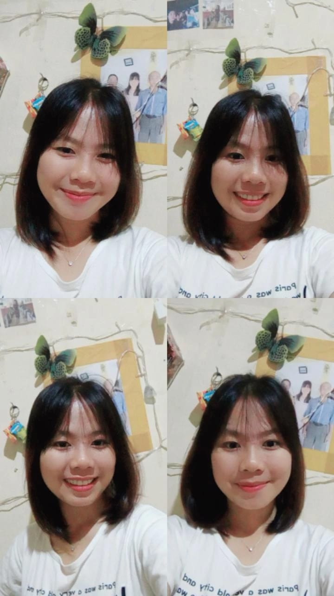

RIKA SELVIN HAREFA

GALERY
PROFIL
- Nama : Rika Selvin Harefa
- TTL : Awa'ai, 18 April 2002
- Panggilan : Rika
- Hobby : Rebahan, jajan, jalan-jalan, baca novel
Night
- Beberapa dari mereka yang biasa tidur lelap mengeluh bahwa malam terlalu singkat. Namun bagiku yang insomnia, begadang semalaman menjadikan malam terasa seumur hidup.
- Kadang sepi menjadi sahabat paling mengerti bahwa sunyi adalah bagian dari hal yang paling memahami.
- Bukan malam yang membawa sunTidak perlu malam untuk sekadar menyaksikan kegelapan, di sudut sepi hidup, dapat kau saksikan cahaya yang begitu redup.
- Malam menyampaikan apa yang tak terpisahkan terang, sunyi memiliki gaduhnya sendiri, dan kosong tak selalu dapat disinggahi.
- Jangan bersedih jika hari terbaikmu berakhir. Bersyukur karena setidaknya dia menjadi bagian dalam pengalaman hidupmu.
Filosofi hidup
- Ada yang berubah, ada yang bertahan. Karena zaman tak bisa dilawan. Yang pasti kepercayaan harus diperjuangkan.
- Sesekali berhentilah sekedar untuk bersantai. Bukan untuk terlena, namun membangun semangat untuk perjuangan berikutnya.
- Jika engkau ingin hidup senang, maka hendaklah engkau rela dianggap sebagai tidak berakal atau dianggap orang bodoh
- Keberhasilan adalah kemampuan melewati dan mengatasi dari satu kegagalan ke kegagalan berikutnya tanpa kehilangan semangat
- Jadilah alasan seseorang tersenyum. Jadilah alasan seseorang merasa dicintai dan percaya pada kebaikan orang lain
Filosofi Kopi
- Cuma segelas kopi yang bercerita kepadaku bahwa yang hitam tak selalu kotor dan yang pahit tak selalu menyedihkan.
- Ketika kopi menjadi sahabat sejati, pagi bukan lagi sebuah misteri. Seperti kamu yang selalu ada di hati, selalu mengisi hari-hari.
- Setiap karakter dan arti kehidupan dapat kita temukan dalam secangkir kopi. Selama ada yang namanya kopi, orang-orang dapat menemukan dirinya disini.
- Jadilah seperti kopi pagi ini. Walau sendiri, namun memberi ketenangan dan inspirasi tanpa henti.
- Satu langkah kecil dari sebuah niat baik mampu membawa kita menuju sesuatu yang di luar imajinasi.
Latihan Rika